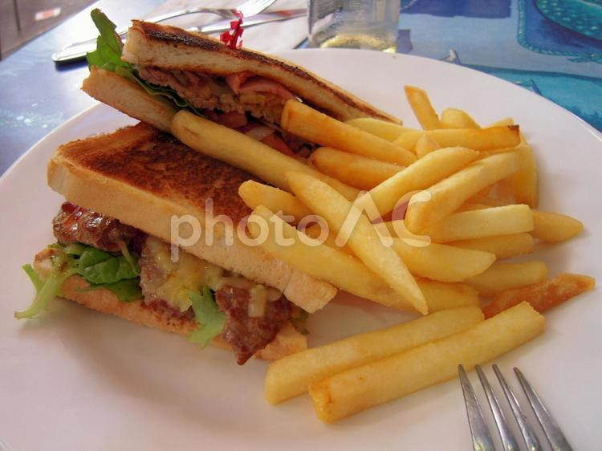
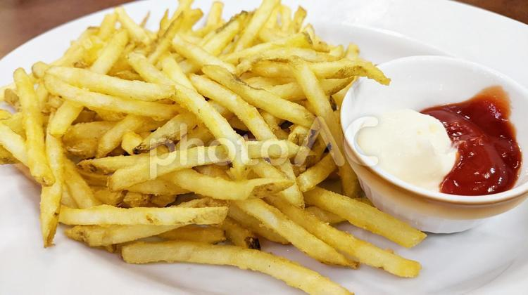
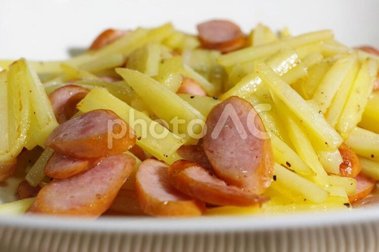
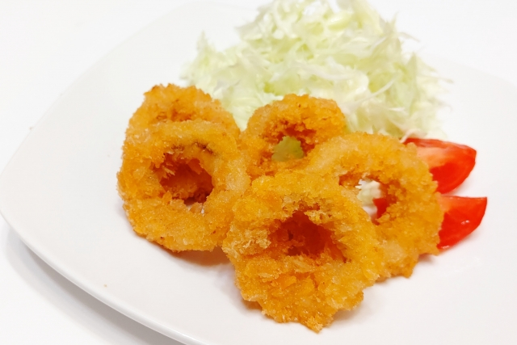
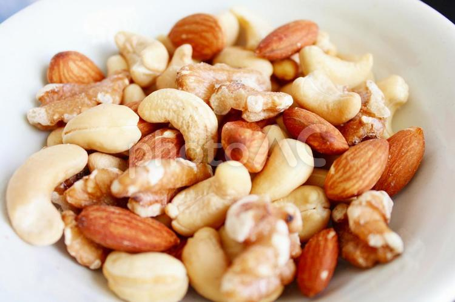
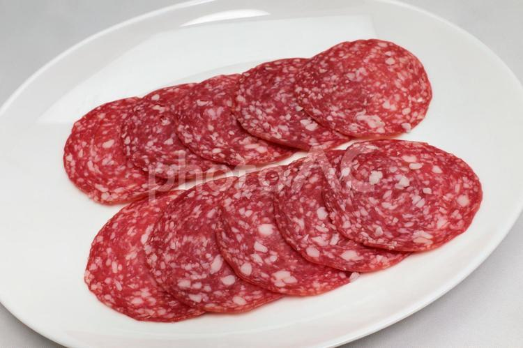
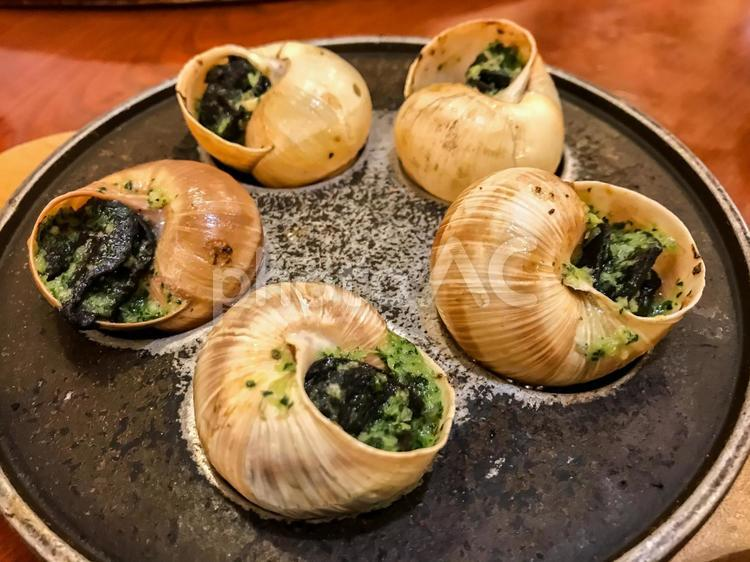
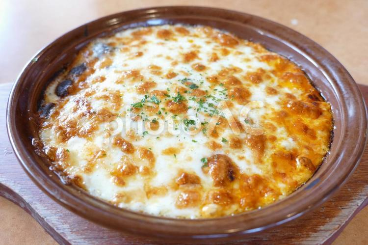

岡島喫茶店
ドリンク
コーヒー
カフェオレ
カフェモカ
ラテ
ヨーグルトドリンク
ソフトドリンク
お食事
パスタ
ピザ
ステーキ
サラダ
サイドメニュー
デザート
情報
About
お知らせ
アクセス
採用
アルバイト
新卒
中途

ハンバーガーとフライドポテトのセット

フライドポテト

細切りポテトとウインナーソーセージのジャーマンポテト

イカリング
フライドチキン

ミックスナッツ

サラミ

エスカルゴ

ドリア